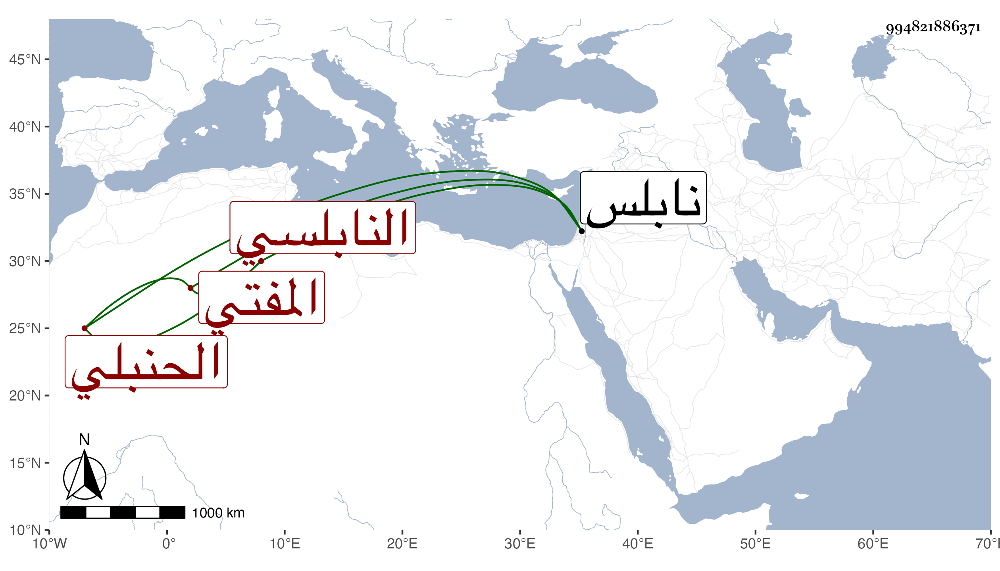

0902Sakhawi.DawLamic.ITO20230111-ara1.EIS1600.994821886371
Biography ID: 994821886371
134
أبو بكر بن علي بن أبي بكر بن الحكم سيف الدين وتقي الدين النابلسي الحنبلي المفتي ويعرف بابن الحكم . قال شيخنا في معجمه لقيته بنابلس فقرأت عليه الأربعين المنتقاة من المستجاد من تاريخ بغداد مع الأناشيد بسماعه لذلك على البياني انتهى . وحدثنا عنه التقي القلقشندي بالمسلسل عن الميدومي سماعا .
